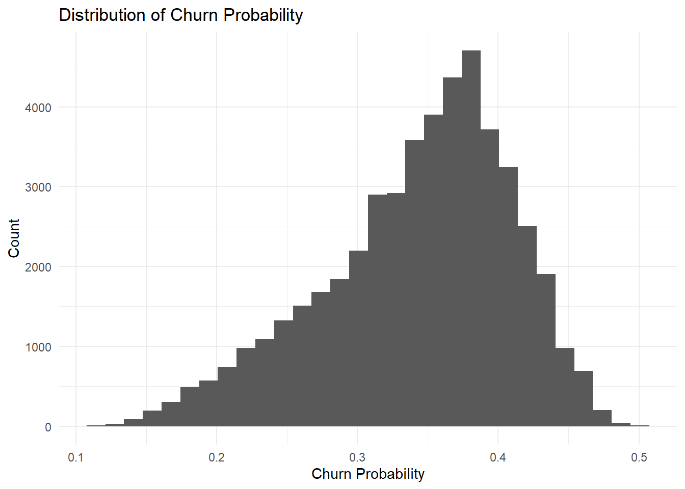
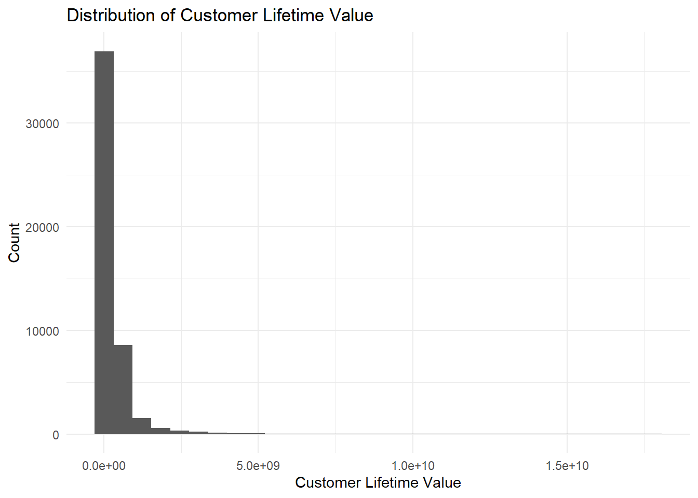
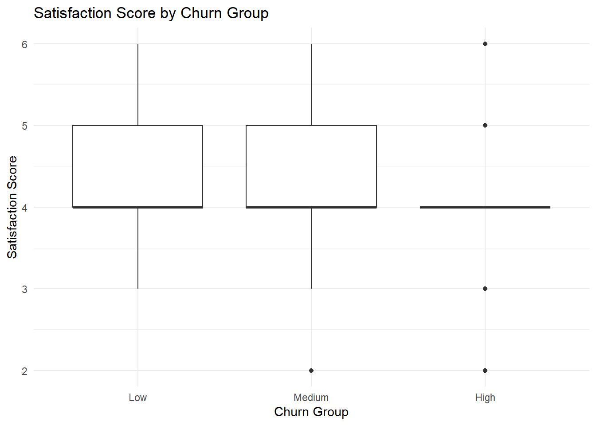
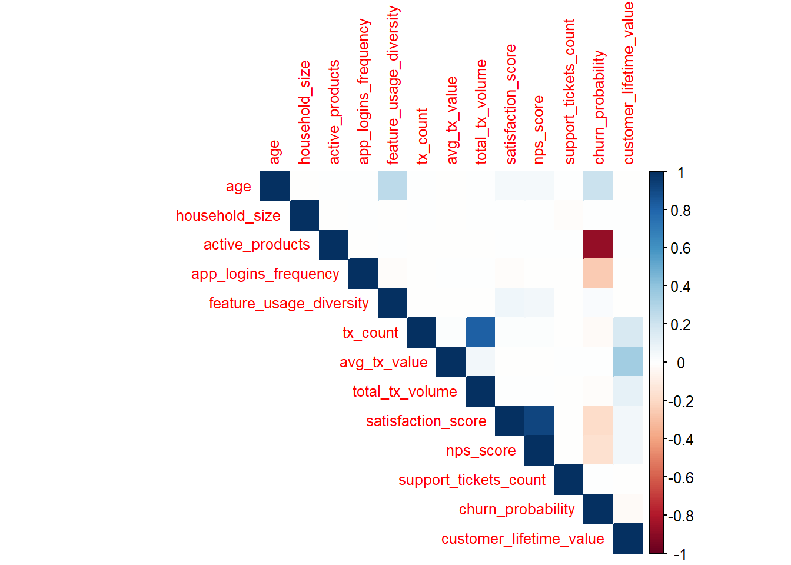
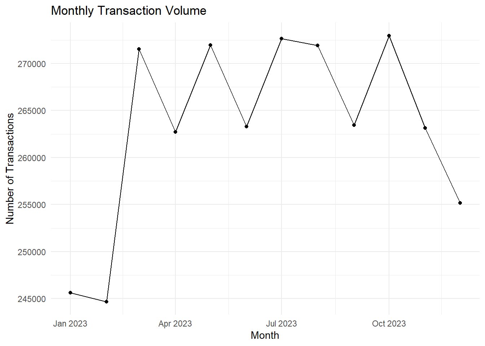
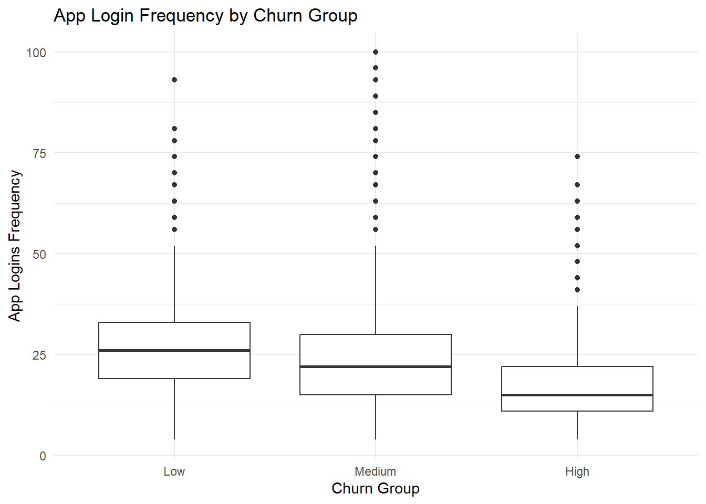
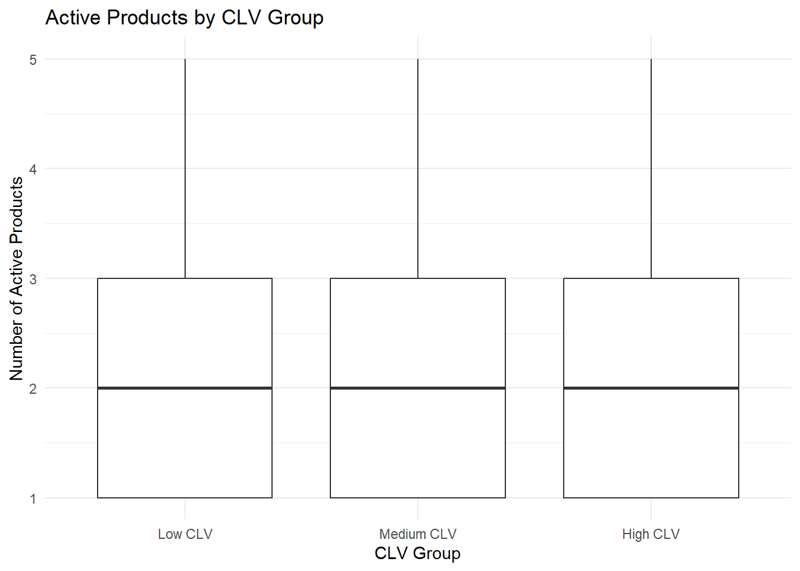
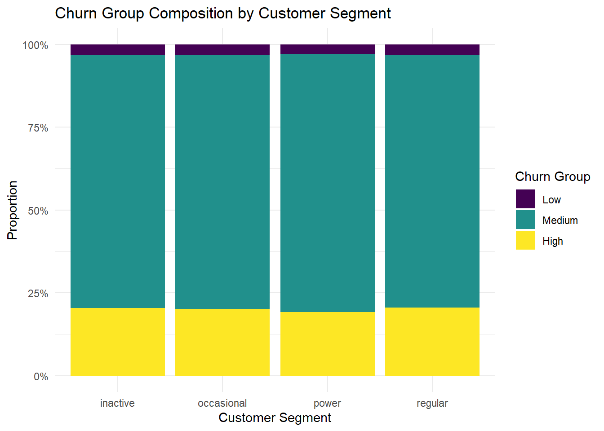
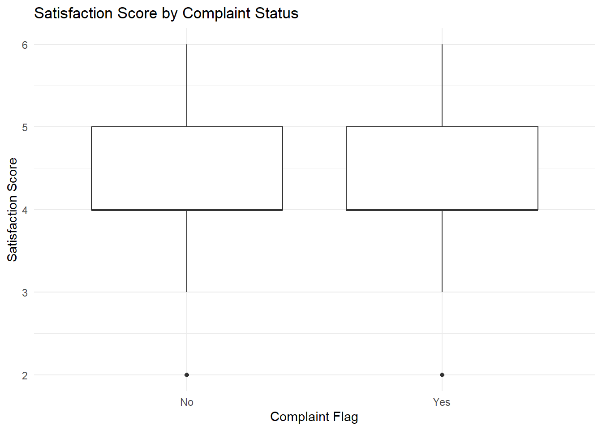
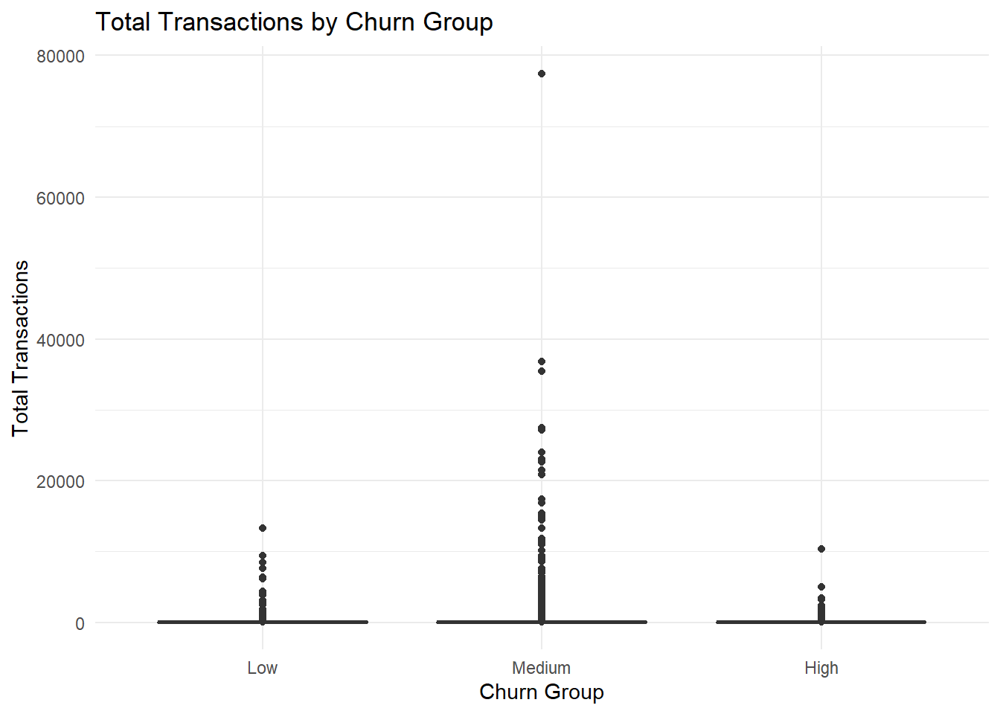

pacman::p_load(tidyverse, skimr, scales, corrplot, DT, janitor, forcats, patchwork)Take-home Exercise 2 - 1
Overview
This is another part of Take-home Exercise 2 including EDA and CDA which will not be used for group project prototype building.
Getting Preparation
Importing Data
customer_raw <- read_csv("Data/TE02/customer_data.csv")
transaction_raw <- read_csv("Data/TE02/transactions_data.csv")Data Preparation
Behavioral and transactional data from 48,723 customers of a Colombian fintech company, collected over 12 months from January 4, 2023, to December 29, 2023. Comprises 3,159,157 individual transactions
Customer Data Preparation
# Check Missing and Uniquness
customer_raw %>%
summarise(across(everything(), ~ sum(is.na(.)))) %>%
pivot_longer(cols = everything(),
names_to = "variable",
values_to = "missing_count") %>%
arrange(desc(missing_count))# A tibble: 54 × 2
variable missing_count
<chr> <int>
1 complaint_topics 24346
2 credit_utilization_ratio 18263
3 feature_requests 16115
4 customer_id 0
5 age 0
6 gender 0
7 location 0
8 income_bracket 0
9 occupation 0
10 education_level 0
# ℹ 44 more rowscustomer_raw %>%
summarise(
total_rows = n(),
unique_customers = n_distinct(customer_id),
duplicated_customer_id = n() - n_distinct(customer_id)
)# A tibble: 1 × 3
total_rows unique_customers duplicated_customer_id
<int> <int> <int>
1 48723 48723 0# clean-customer-data
customer_clean <- customer_raw %>%
mutate(
# Convert date columns
first_tx = ymd(first_tx),
last_tx = ymd(last_tx),
last_survey_date = ymd(last_survey_date),
last_transaction_date = ymd(last_transaction_date),
first_transaction_date = ymd(first_transaction_date),
# Convert categorical variables
gender = as.factor(gender),
location = as.factor(location),
income_bracket = factor(income_bracket, ordered = TRUE),
occupation = as.factor(occupation),
education_level = factor(education_level, ordered = TRUE),
marital_status = as.factor(marital_status),
acquisition_channel = as.factor(acquisition_channel),
customer_segment = as.factor(customer_segment),
clv_segment = factor(clv_segment, ordered = TRUE),
feedback_sentiment = as.factor(feedback_sentiment),
preferred_transaction_type = as.factor(preferred_transaction_type),
# Convert product ownership fields to numeric 0/1
savings_account = case_when(
as.character(savings_account) == "TRUE" ~ 1,
as.character(savings_account) == "FALSE" ~ 0,
TRUE ~ NA_real_
),
credit_card = case_when(
as.character(credit_card) == "TRUE" ~ 1,
as.character(credit_card) == "FALSE" ~ 0,
TRUE ~ NA_real_
),
personal_loan = case_when(
as.character(personal_loan) == "TRUE" ~ 1,
as.character(personal_loan) == "FALSE" ~ 0,
TRUE ~ NA_real_
),
investment_account = case_when(
as.character(investment_account) == "TRUE" ~ 1,
as.character(investment_account) == "FALSE" ~ 0,
TRUE ~ NA_real_
),
insurance_product = case_when(
as.character(insurance_product) == "TRUE" ~ 1,
as.character(insurance_product) == "FALSE" ~ 0,
TRUE ~ NA_real_
),
bill_payment_user = case_when(
as.character(bill_payment_user) == "TRUE" ~ 1,
as.character(bill_payment_user) == "FALSE" ~ 0,
TRUE ~ NA_real_
),
auto_savings_enabled = case_when(
as.character(auto_savings_enabled) == "TRUE" ~ 1,
as.character(auto_savings_enabled) == "FALSE" ~ 0,
TRUE ~ NA_real_
),
# Handle missing categorical values
complaint_topics = fct_explicit_na(as.factor(complaint_topics),
na_level = "No Complaint / Missing"),
feature_requests = fct_explicit_na(as.factor(feature_requests),
na_level = "No Request / Missing")
) %>%
mutate(
# Derived variables
churn_group = case_when(
churn_probability < 0.20 ~ "Low",
churn_probability < 0.40 ~ "Medium",
TRUE ~ "High"
),
churn_group = factor(churn_group,
levels = c("Low", "Medium", "High"),
ordered = TRUE),
clv_group = ntile(customer_lifetime_value, 3) %>%
factor(levels = 1:3,
labels = c("Low CLV", "Medium CLV", "High CLV"),
ordered = TRUE),
activity_group = ntile(app_logins_frequency, 3) %>%
factor(levels = 1:3,
labels = c("Low Activity", "Medium Activity", "High Activity"),
ordered = TRUE),
tenure_bucket = case_when(
customer_tenure < 6 ~ "New",
customer_tenure < 18 ~ "Growing",
TRUE ~ "Mature"
),
tenure_bucket = factor(tenure_bucket,
levels = c("New", "Growing", "Mature"),
ordered = TRUE),
complaint_flag = if_else(complaint_topics == "No Complaint / Missing", "No", "Yes"),
request_flag = if_else(feature_requests == "No Request / Missing", "No", "Yes"),
# Add age group for later EDA/CDA
age_group = case_when(
age < 25 ~ "<25",
age >= 25 & age <= 34 ~ "25-34",
age >= 35 & age <= 44 ~ "35-44",
age >= 45 & age <= 54 ~ "45-54",
age >= 55 ~ "55+",
TRUE ~ NA_character_
),
age_group = factor(
age_group,
levels = c("<25", "25-34", "35-44", "45-54", "55+"),
ordered = TRUE
),
# Count number of products owned
total_products_5 = rowSums(
pick(
savings_account,
credit_card,
personal_loan,
investment_account,
insurance_product
),
na.rm = TRUE
)
)Transaction Data Preparation
# Check Missing
transaction_raw %>%
summarise(across(everything(), ~ sum(is.na(.)))) %>%
pivot_longer(cols = everything(),
names_to = "variable",
values_to = "missing_count") %>%
arrange(desc(missing_count))# A tibble: 4 × 2
variable missing_count
<chr> <int>
1 customer_id 0
2 date 0
3 amount 0
4 type 0# Check whether each customer_id in transaction_csv can be found in customer_csv
all(transaction_raw$customer_id %in% customer_clean$customer_id)[1] TRUEThe result states every customer_id in transaction data can be found in customer data.
# clean-transaction-data
transaction_clean <- transaction_raw %>%
mutate(
transaction_date = ymd(date),
transaction_day = as_date(transaction_date),
transaction_month = floor_date(transaction_day, unit = "month"),
transaction_weekday = wday(transaction_day, label = TRUE, abbr = FALSE),
transaction_hour = hour(transaction_date),
is_weekend = if_else(transaction_weekday %in%
c("Saturday", "Sunday"), "Weekend", "Weekday"),
transaction_type = as.factor(type)
) %>%
distinct()
# key matching
transaction_clean %>%
anti_join(customer_clean, by = "customer_id") %>%
summarise(unmatched_customer_ids = n_distinct(customer_id))# A tibble: 1 × 1
unmatched_customer_ids
<int>
1 0# aggregate transaction into customer level
customer_tx_summary <- transaction_clean %>%
group_by(customer_id) %>%
summarise(
total_transactions = n(),
active_transaction_days = n_distinct(transaction_day),
total_transaction_amount = sum(amount, na.rm = TRUE),
avg_transaction_amount = mean(amount, na.rm = TRUE),
median_transaction_amount = median(amount, na.rm = TRUE),
max_transaction_amount = max(amount, na.rm = TRUE),
unique_transaction_types = n_distinct(transaction_type),
.groups = "drop"
)Create final Analysis Dataset
analysis_data <- customer_clean %>%
left_join(customer_tx_summary, by = "customer_id")
glimpse(analysis_data)Rows: 48,723
Columns: 69
$ customer_id <dbl> 93716481, 49020929, 52690950, 23199751, 619…
$ age <dbl> 44, 44, 45, 45, 44, 45, 44, 44, 45, 44, 44,…
$ gender <fct> Male, Male, Male, Male, Female, Female, Mal…
$ location <fct> "Pereira, Risaralda", "Cali, Valle del Cauc…
$ income_bracket <ord> Very High, Medium, High, High, Medium, Medi…
$ occupation <fct> Engineer, Construction Worker, Construction…
$ education_level <ord> Master, Bachelor, Bachelor, High School, Ba…
$ marital_status <fct> Married, Married, Married, Single, Married,…
$ household_size <dbl> 5, 2, 4, 2, 3, 4, 4, 3, 1, 3, 5, 3, 3, 7, 3…
$ acquisition_channel <fct> Partnership, Paid Ad, Paid Ad, Referral, Pa…
$ customer_segment <fct> occasional, regular, inactive, inactive, po…
$ savings_account <dbl> 1, 1, 1, 1, 1, 1, 1, 1, 1, 1, 1, 0, 1, 1, 1…
$ credit_card <dbl> 1, 0, 0, 0, 1, 1, 1, 0, 1, 1, 1, 0, 1, 1, 1…
$ personal_loan <dbl> 0, 0, 0, 0, 0, 0, 0, 0, 0, 1, 0, 1, 0, 0, 0…
$ investment_account <dbl> 0, 0, 1, 1, 0, 1, 0, 1, 1, 1, 0, 0, 0, 0, 0…
$ insurance_product <dbl> 1, 0, 1, 0, 0, 0, 0, 0, 0, 0, 1, 0, 1, 1, 1…
$ active_products <dbl> 1, 5, 3, 2, 1, 1, 1, 4, 2, 3, 1, 5, 3, 1, 1…
$ app_logins_frequency <dbl> 15, 30, 4, 15, 19, 15, 44, 22, 7, 11, 7, 30…
$ feature_usage_diversity <dbl> 3, 0, 4, 4, 1, 4, 6, 1, 1, 6, 3, 1, 2, 1, 3…
$ bill_payment_user <dbl> 0, 1, 1, 1, 0, 1, 1, 0, 1, 1, 1, 1, 1, 1, 1…
$ auto_savings_enabled <dbl> 0, 0, 0, 0, 0, 1, 0, 1, 0, 1, 1, 1, 0, 0, 0…
$ credit_utilization_ratio <dbl> 0.17871029, NA, NA, NA, 0.40360553, 0.07786…
$ international_transactions <dbl> 1, 1, 1, 1, 0, 0, 0, 0, 0, 1, 0, 0, 0, 1, 0…
$ failed_transactions <dbl> 0, 0, 0, 1, 0, 0, 1, 1, 0, 0, 1, 0, 0, 1, 0…
$ tx_count <dbl> 76, 10, 10, 23, 18, 15, 24, 45, 134, 13, 18…
$ avg_tx_value <dbl> 1679872.4, 5445810.0, 640335.0, 660180.4, 1…
$ total_tx_volume <dbl> 127670300, 54458100, 6403350, 15184150, 262…
$ first_tx <date> 2023-01-05, 2023-02-05, 2023-01-31, 2023-0…
$ last_tx <date> 2023-12-25, 2023-12-20, 2023-12-12, 2023-1…
$ base_satisfaction <dbl> 9.213372, 6.073093, 8.198643, 7.529577, 6.6…
$ tx_satisfaction <dbl> 0.380, 0.050, 0.050, 0.115, 0.090, 0.075, 0…
$ product_satisfaction <dbl> 0.6, 0.2, 0.6, 0.4, 0.4, 0.6, 0.4, 0.4, 0.6…
$ satisfaction_score <dbl> 5, 3, 4, 4, 3, 4, 4, 4, 5, 4, 4, 5, 4, 3, 4…
$ nps_score <dbl> -7, -46, -29, -31, -47, -29, -34, -36, -4, …
$ last_survey_date <date> 2023-12-16, 2023-05-05, 2023-11-16, 2023-0…
$ support_tickets_count <dbl> 1, 1, 0, 2, 2, 1, 1, 0, 2, 0, 0, 2, 3, 1, 0…
$ resolved_tickets_ratio <dbl> 0.0000000, 1.0000000, 0.0000000, 0.5000000,…
$ app_store_rating <dbl> 3.5, 4.0, 5.0, 4.5, 4.0, 4.0, 5.0, 4.5, 4.5…
$ feedback_sentiment <fct> Neutral, Positive, Positive, Positive, Posi…
$ feature_requests <fct> "Budgeting tools", "No Request / Missing", …
$ complaint_topics <fct> No Complaint / Missing, No Complaint / Miss…
$ clv_segment <ord> Gold, Bronze, Gold, Bronze, Gold, Bronze, B…
$ monthly_transaction_count <dbl> 1.428571, 1.571429, 2.500000, 1.555556, 2.1…
$ average_transaction_value <dbl> 6054025.0, 2127413.6, 3575915.0, 1513353.6,…
$ total_transaction_volume <dbl> 60540250, 23401550, 35759150, 21186950, 116…
$ transaction_frequency <dbl> 0.03076923, 0.03293413, 0.05000000, 0.04778…
$ last_transaction_date <date> 2023-12-05, 2023-12-18, 2023-10-27, 2023-1…
$ preferred_transaction_type <fct> Transfer, Transfer, Transfer, Transfer, Pay…
$ first_transaction_date <date> 2023-01-05, 2023-02-05, 2023-01-31, 2023-0…
$ weekend_transaction_ratio <dbl> 0.30000000, 0.18181818, 0.30000000, 0.14285…
$ avg_daily_transactions <dbl> 0.03076923, 0.03293413, 0.05000000, 0.04778…
$ customer_tenure <dbl> 11.633333, 11.500000, 8.766667, 10.733333, …
$ churn_probability <dbl> 0.3622688, 0.1817896, 0.3212651, 0.3366287,…
$ customer_lifetime_value <dbl> 312414808, 167022286, 19403711, 35978105, 3…
$ churn_group <ord> Medium, Low, Medium, Medium, Medium, Medium…
$ clv_group <ord> High CLV, Medium CLV, Low CLV, Low CLV, Hig…
$ activity_group <ord> Low Activity, High Activity, Low Activity, …
$ tenure_bucket <ord> Growing, Growing, Growing, Growing, Growing…
$ complaint_flag <chr> "No", "No", "No", "No", "Yes", "No", "No", …
$ request_flag <chr> "Yes", "No", "No", "Yes", "Yes", "Yes", "No…
$ age_group <ord> 35-44, 35-44, 45-54, 45-54, 35-44, 45-54, 3…
$ total_products_5 <dbl> 3, 1, 3, 2, 2, 3, 2, 2, 3, 4, 3, 1, 3, 3, 3…
$ total_transactions <int> 76, 10, 10, 23, 18, 15, 24, 45, 134, 13, 18…
$ active_transaction_days <int> 71, 10, 10, 22, 18, 14, 24, 43, 111, 13, 17…
$ total_transaction_amount <dbl> 127670300, 54458100, 6403350, 15184150, 262…
$ avg_transaction_amount <dbl> 1679872.4, 5445810.0, 640335.0, 660180.4, 1…
$ median_transaction_amount <dbl> 1260000, 4520975, 496200, 557700, 10886275,…
$ max_transaction_amount <dbl> 7068550, 16129100, 1663650, 1314900, 422420…
$ unique_transaction_types <int> 4, 4, 4, 4, 4, 4, 4, 4, 4, 3, 4, 4, 4, 4, 3…analysis_data %>%
summarise(
total_rows = n(),
unique_customers = n_distinct(customer_id)
)# A tibble: 1 × 2
total_rows unique_customers
<int> <int>
1 48723 48723EDA
# Churn probability distribution
ggplot(analysis_data, aes(x = churn_probability)) +
geom_histogram(bins = 30) +
labs(
title = "Distribution of Churn Probability",
x = "Churn Probability",
y = "Count"
) +
theme_minimal()
# Customer Lifetime Value
ggplot(analysis_data, aes(x = customer_lifetime_value)) +
geom_histogram(bins = 30) +
labs(
title = "Distribution of Customer Lifetime Value",
x = "Customer Lifetime Value",
y = "Count"
) +
theme_minimal()
# Satisfaction vs churn group
ggplot(analysis_data, aes(x = churn_group, y = satisfaction_score)) +
geom_boxplot() +
labs(
title = "Satisfaction Score by Churn Group",
x = "Churn Group",
y = "Satisfaction Score"
) +
theme_minimal()
# Correlation heatmap for numeric variables
numeric_df <- analysis_data %>%
select(where(is.numeric)) %>%
select(
age, household_size, active_products, app_logins_frequency,
feature_usage_diversity, tx_count, avg_tx_value, total_tx_volume,
satisfaction_score, nps_score, support_tickets_count,
churn_probability, customer_lifetime_value
)
cor_matrix <- cor(numeric_df, use = "pairwise.complete.obs")
corrplot(cor_matrix, method = "color", type = "upper", tl.cex = 0.8)
# Transaction trend over time
transaction_clean %>%
count(transaction_month) %>%
ggplot(aes(x = transaction_month, y = n)) +
geom_line() +
geom_point() +
labs(
title = "Monthly Transaction Volume",
x = "Month",
y = "Number of Transactions"
) +
theme_minimal()
CDA
# Compare customer by churn groups in App
ggplot(analysis_data, aes(x = churn_group, y = app_logins_frequency)) +
geom_boxplot() +
labs(
title = "App Login Frequency by Churn Group",
x = "Churn Group",
y = "App Logins Frequency"
) +
theme_minimal()
# Compare customers by CLV groups on active products
ggplot(analysis_data, aes(x = clv_group, y = active_products)) +
geom_boxplot() +
labs(
title = "Active Products by CLV Group",
x = "CLV Group",
y = "Number of Active Products"
) +
theme_minimal()
# Compare churn group by customer segment
ggplot(analysis_data, aes(x = customer_segment, fill = churn_group)) +
geom_bar(position = "fill") +
scale_y_continuous(labels = percent) +
labs(
title = "Churn Group Composition by Customer Segment",
x = "Customer Segment",
y = "Proportion",
fill = "Churn Group"
) +
theme_minimal()
# Compare satisfaction by complaint flag
ggplot(analysis_data, aes(x = complaint_flag, y = satisfaction_score)) +
geom_boxplot() +
labs(
title = "Satisfaction Score by Complaint Status",
x = "Complaint Flag",
y = "Satisfaction Score"
) +
theme_minimal()
# Compare transaction metrics across churn groups
ggplot(analysis_data, aes(x = churn_group, y = total_transactions)) +
geom_boxplot() +
labs(
title = "Total Transactions by Churn Group",
x = "Churn Group",
y = "Total Transactions"
) +
theme_minimal()
analysis_data %>%
group_by(churn_group) %>%
summarise(
avg_app_logins = mean(app_logins_frequency, na.rm = TRUE),
avg_active_products = mean(active_products, na.rm = TRUE),
avg_satisfaction = mean(satisfaction_score, na.rm = TRUE),
avg_nps = mean(nps_score, na.rm = TRUE),
avg_clv = mean(customer_lifetime_value, na.rm = TRUE),
.groups = "drop"
) %>%
datatable()